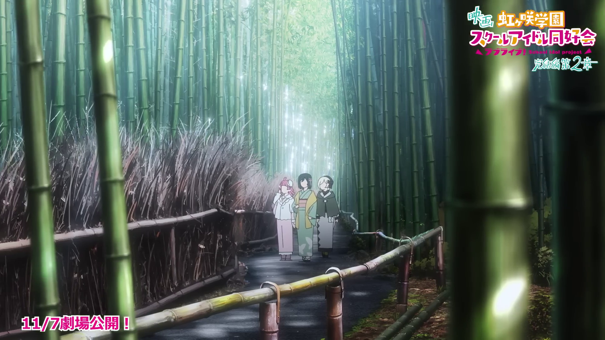
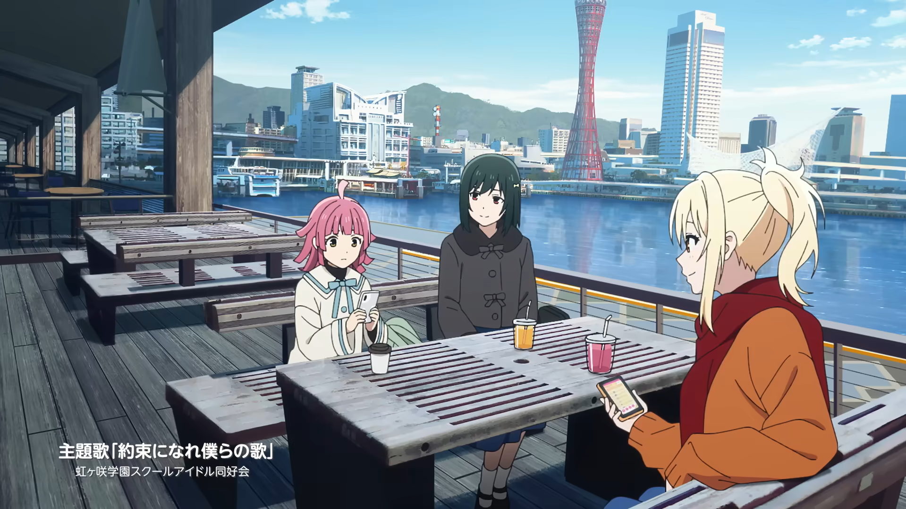
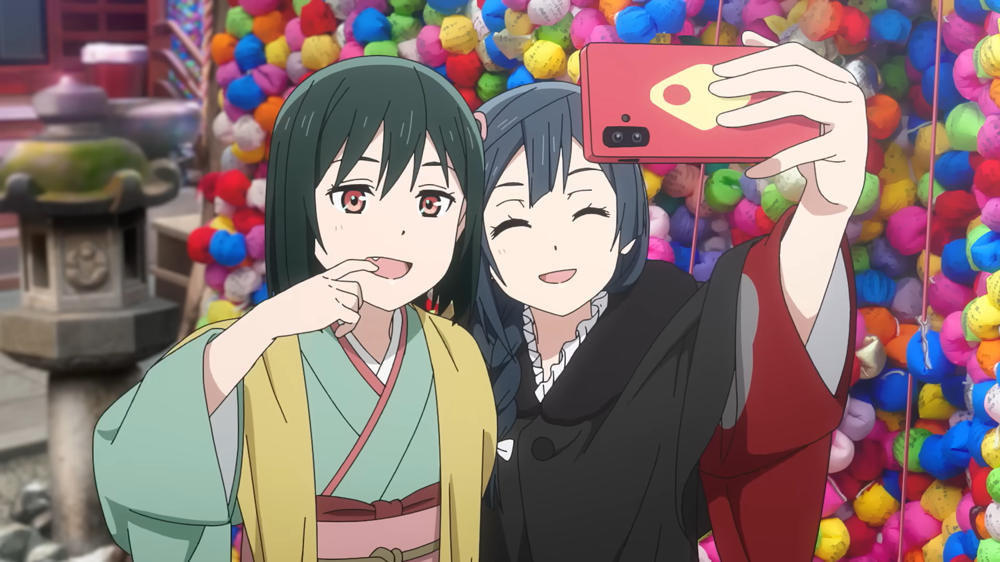
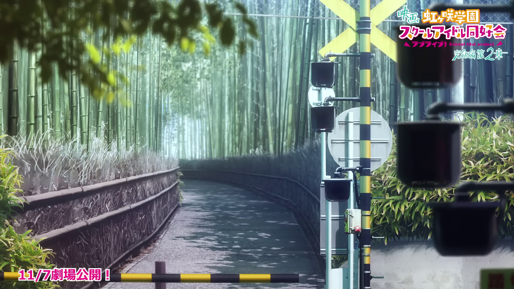
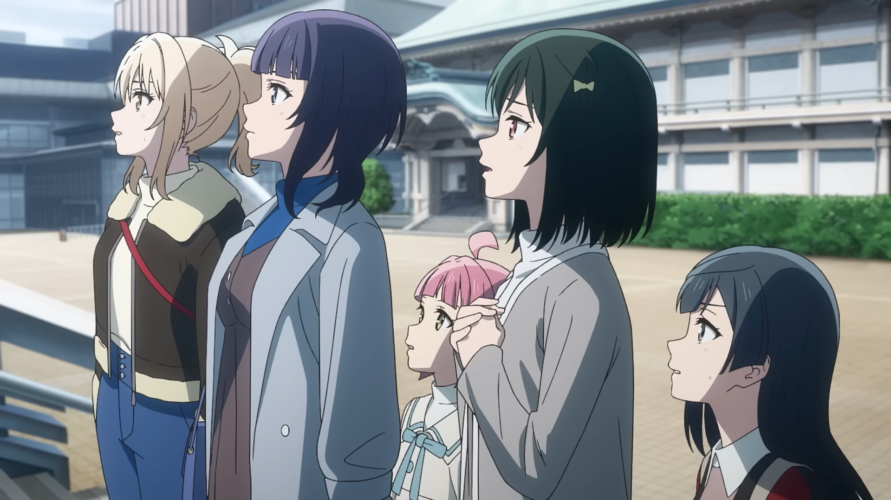
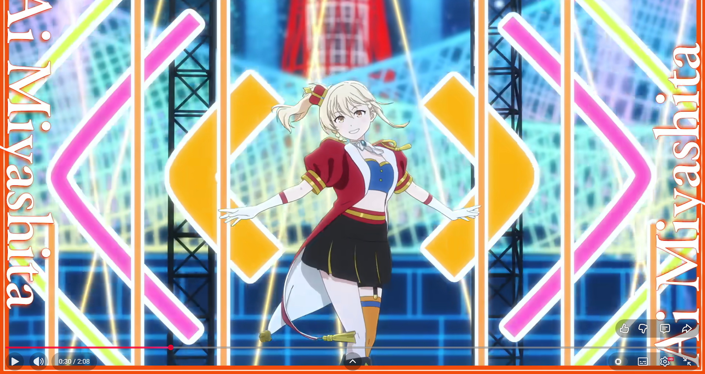
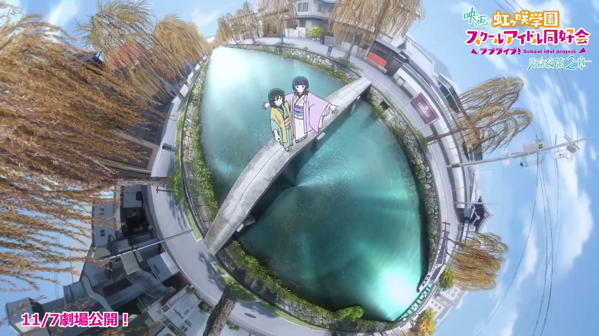
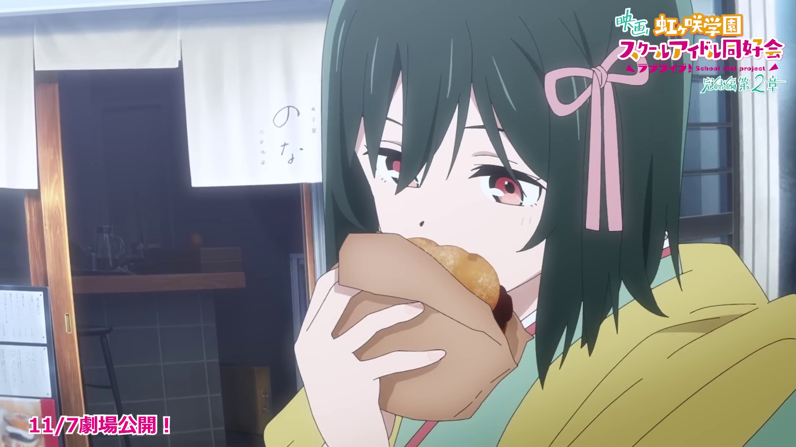
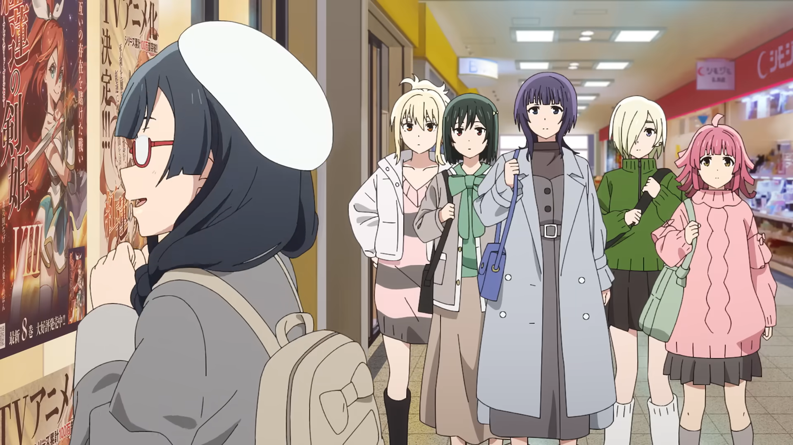

Travel Itinerary 2026
Kyoto & Kobe — A Journey Through Nijigsaki High the Movie Part2
Overview

Day 1
嵐山の竹林や東山の一本橋を散策。夕刻に神戸へ移動し、神戸牛の夕食。

Day 2
アニメイト三ノ宮、神戸ハーバーランドumie、そして神戸ポートタワーからの絶景夕食を堪能。

Day 3
八坂庚申堂、八坂の塔、高台寺と祇園エリアを歩き、koé donuts kyotoでランチ。ポケモンセンターで旅の締めくくり。
町田発 → 嵐山 → 東山 → 三ノ宮
布引ハーブ園 → 北野異人館 → 南京町 → ハーバーランド
神戸チェックアウト → 東山・祇園 → 帰路
Photo Gallery






Accommodation
〒651-0084
兵庫県神戸市中央区磯辺通１丁目１−２２
TEL: 078-222-7500
Budget
| 項目 | 内訳 | 金額（円） |
|---|---|---|
| 新幹線 | 往復（3名分） | 66,340 |
| 嵯峨嵐山 → 東山 | 嵯峨野線・東西線 | 920 |
| 京都・三ノ宮間 | 往復（JR京都線） | 4,460 |
| 宿泊費 | ホテルサンルートソプラ神戸（2泊） | 42,800 |
| 合計 | 114,520 | |
| 一人当たり | 38,174 | |
※ 上記は交通費・宿泊費のみの合計です。食事・お土産代は含みません。
Packing List